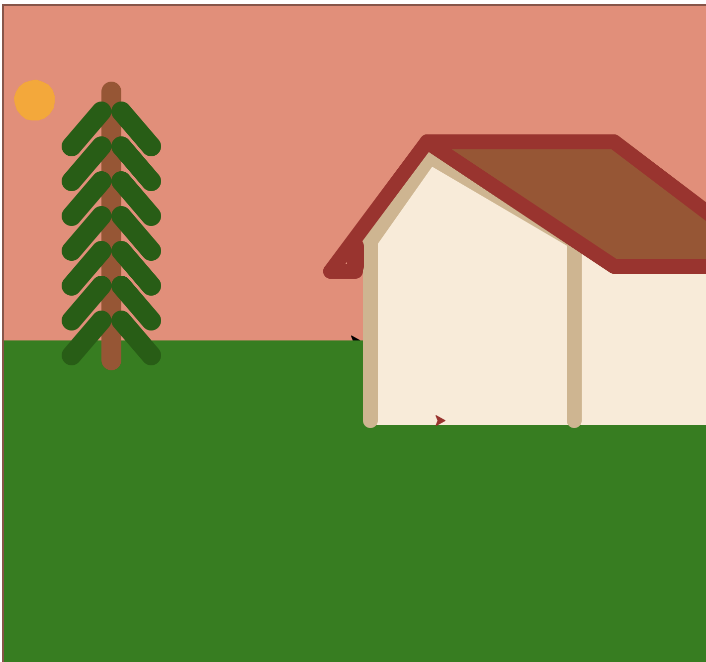
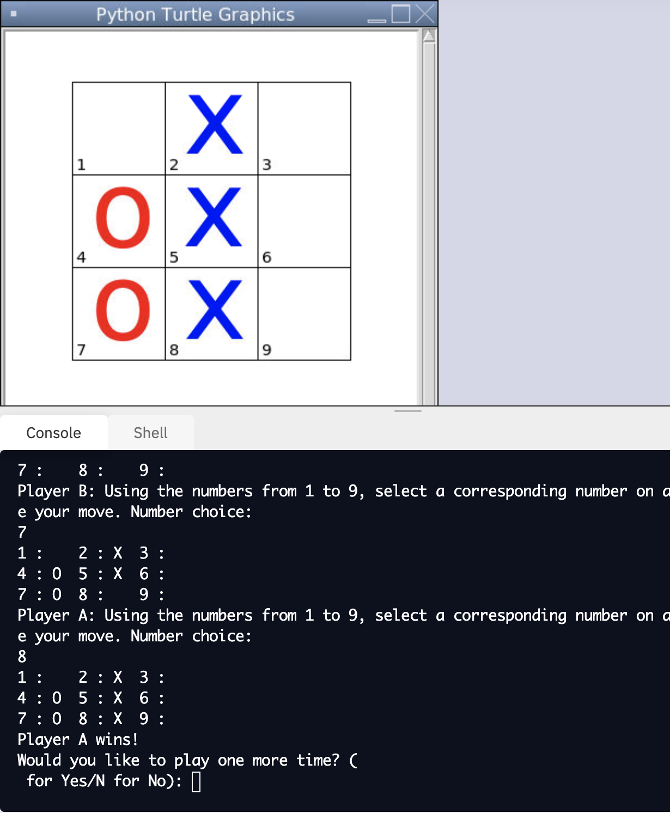

Portfolio
Home
Portfolio
About Me
This is my Portfolio Page!

1.1.9 Project!

2.2.5 Project: Tic Tac Toe!

This tic-tac-toe game was made using simple turtle graphics painter to create the board and visuals. We used onkeypress functions to allow the user to input the placement of their game piece. To create the instructions below the grpahics we printed them down below and to recognize when a user has won, we defined victory by using list functions.